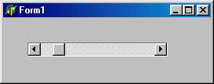
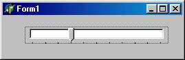

TScrollBar - управление значением величины
Панель Standard
 Компонент TScrollBar представляет собой стандартный для Windows управляющий элемент, похожий на полосу прокрутки окна. Обычно он используется для визуального управления значением числовой величины.
Свойства компонента:
|
TSrollBarKind = (sbHorizontal, sbVertical) ; property Kind: TScrollBarKind; |
Определяет ориентацию компонента: sbHorizontal - бегунок перемещается по горизонтали; sbVertical - бегунок перемещается по вертикали |
|
property LargeChange: TScroll-Barinc; |
“Большой” сдвиг бегунка (при щелчке мышью рядом с концевой кнопкой) |
|
property Max: Integer; |
Максимальное значение диапазона изменения числовой величины |
|
property Min: Integers; |
Минимальное значение диапазона изменения числовой величины |
|
property PageSize: Integers; |
Определяет размер позиции табуляции бегунка |
|
property Position: Integers;property |
Текущее значение числовой величины |
|
SmallChange: TScroll-Barinc; |
“Малый” сдвиг бегунка (при щелчке мышью по концевой кнопке) |
С помощью метода
procedure SetParams(APosition, AMax, AMin: Integer);
можно сразу установить свойства Position, мах и Min.
С компонентом связано два события:
type TScrollEvent = procedure(Sender: TObject;
ScrollCode: TScrollCode; var ScrollPos: Integer) of objects;
property OnScroll: TScrollEvent;
property OnChange: TNotifyEvent;
Первое возникает при любом изменении свойства position, второе - при изменении параметров методом Setparams.
Подобно TButton компонентом полностью управляет Windows поэтому у него нет свойства Color.
TTrackBar-регулятор величины
Панель Win32

Компонент класса TTrackBar предназначен для визуального управления числовой величиной. Он во многом схож со стандартным элементом TScroll-Ваг и отличается от него в основном оформлением.
Свойства компонента:
|
property Frequency: Integer; |
Определяет частоту нанесения меток: 1 - каждое значение диапазона изменения имеет метку; 2 - каждое 2-е значение и т. д. |
|
property LineSize: Integer; |
Определяет смещение ползунка при нажатии клавиш курсора или при единичном перемещении мышью |
|
property Max: Integer; |
Определяет максимальное значение диапазона изменения |
|
property Min: Integer; |
Определяет минимальное значение диапазона измене ния |
|
property Orientation: TTrackBarOrientation; |
Определяет ориентацию компонента: trHorizontal -горизонтальная; trVertical -вертикальная |
|
property PageSize: Integer; |
Определяет смещение ползунка при нажатии клавиш Page Up, Page Down или при щелчке мышью на концах шкалы |
|
property Position: Integer; |
Определяет текущее положение ползунка |
|
property SelEnd: Integer- |
Задает конечную позицию выделения |
|
property SelStart: Integer |
Задает начальную позицию выделения |
|
-property SliderVisible: Boolean-property ThumbLength: Integer; TTickMark = (tmBottomRight, tmTopLeft, tmBoth) ; property TickMarks: TTickMark; TTickStyle = (tsNone, tsAuto, tsManual) ; property TickStyle: TTickStyle; |
Определяет, будет ли видимым указатель компонента Определяет длину указателя Определяет способ нанесения меток: tmBottomRight -внизу или справа; tmTopLeft - вверху или слева; tmBottom - по обеим сторонам Определяет стиль нанесения меток: tsNone - нет меток; tsAuto - метки наносятся с частотой Frequence; tsManual - наносятся начальная и конечная метки, остальные наносит программа с помощью метода setTick |
С помощью метода
procedure SetTick(Value: Integer);
устанавливается метка в позицию, определяемую значением value.